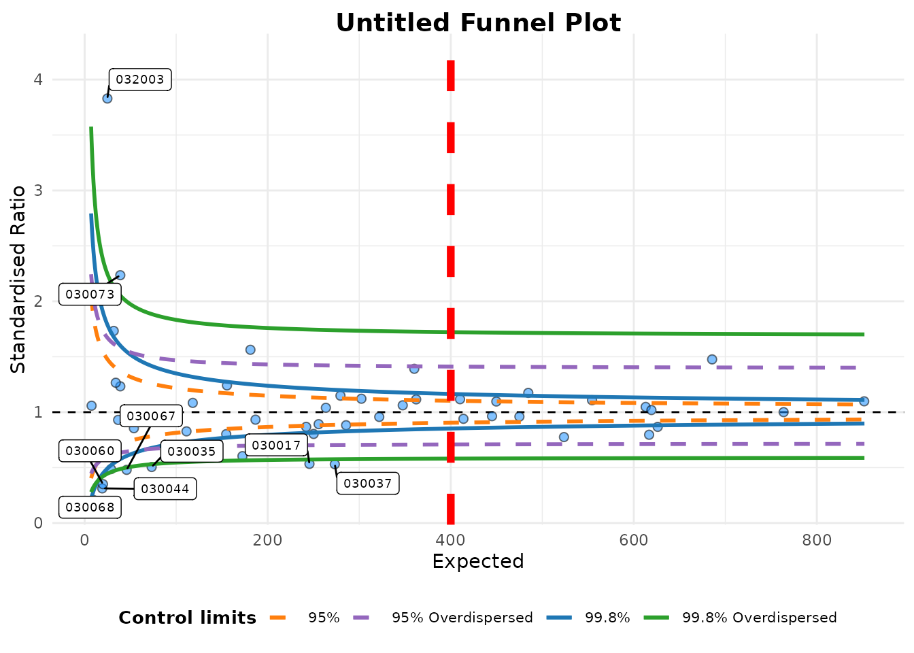

Changing funnel plot options
Source:vignettes/changing_funnel_plot_options.Rmd
changing_funnel_plot_options.RmdSetup
This brief vignette shows how to go about changing some of the parameters available in the funnelplotr package. Firstly, lets set up some data, the same as the README and other vignette:
library(COUNT) #> Loading required package: msme #> Loading required package: MASS #> Loading required package: lattice #> Loading required package: sandwich data(medpar) medpar$provnum<-factor(medpar$provnum) medpar$los<-as.numeric(medpar$los) # Logistic model to predict LOS, LOS is quite overdispersed mod<- glm(los ~ hmo + died + age80 + factor(type), family="poisson", data=medpar) # Get predicted value for ratio medpar$prds<- predict(mod, type="response") # Draw plot, returning just the plot object funnel_plot(denominator=medpar$prds,numerator=medpar$los , group = medpar$provnum, limit=99 ,label_outliers = TRUE , Poisson_limits = TRUE)

#> A funnel plot object with 54 points of which 9 are outliers.
#> Plot is adjusted for overdispersion.Themes
You can alter themes in the funnelplotr packages by using the theme argument. There are a couple of options included with the package funnel_clean (the default) and funnel_grey, but you can write your own theme using any valid ggplot2 theme and pass it to the plot.
funnel_plot(denominator=medpar$prds,numerator=medpar$los , group = medpar$provnum, limit=99 ,label_outliers = TRUE , Poisson_limits = TRUE, theme = funnel_grey() )

#> A funnel plot object with 54 points of which 9 are outliers.
#> Plot is adjusted for overdispersion.If you are not familiar with themes, you can create a theme with the theme function from ggplot2. I will create a new theme, including the funnel_grey theme, but with some different (exaggerated) elements.
library(ggplot2) new_funnel_theme <- funnel_grey()+ theme(plot.title = element_text(face="bold", colour="red", size=6), # Change plot title legend.background = element_rect(fill="brown"), # Alter legend background colour axis.title.y = element_text(angle=0) #Rotate y axis label ) funnel_plot(denominator=medpar$prds,numerator=medpar$los , group = medpar$provnum, limit=99 ,label_outliers = TRUE , Poisson_limits = TRUE, theme = new_funnel_theme)

#> A funnel plot object with 54 points of which 9 are outliers.
#> Plot is adjusted for overdispersion.Plot colours
YOu can change the colours of the limits. I am aiming to allow better colour theme support in future versions, but at present they are supplied as a vector of four hex colours to the plot_cols argument, in the order 95% Poisson, 99.8% Poisson, 95% OD and 99.8% OD. At present all four values are required, whether you are plotting all four limits or not.
I have deliberately avoided using red and green colours as defaults because it encourages value judgements about ‘good’ v.s. ‘bad’ which may be unreasonable for a given data set. Default colours are: c("#FF7F0EFF", "#1F77B4FF", "#9467BDFF","#2CA02CFF")
Here are four other colours instead:
funnel_plot(denominator=medpar$prds,numerator=medpar$los , group = medpar$provnum, limit=99 ,label_outliers = TRUE , Poisson_limits = TRUE, plot_cols= c("#8c8c8c", "#00b159", "#00aedb", "#d11141"))

#> A funnel plot object with 54 points of which 9 are outliers.
#> Plot is adjusted for overdispersion.Changing scales
funnelplotr automatically sets it’s scales from the data you present to it but, on occasions, the scale rules might fall down for a particular dataset, or you may want to fix the plot to a particular scale. You can do this using the xrange and yrange arguments. Each takes a vector of two values, the minimum and the maximum:
## Changing labels funnel_plot(denominator=medpar$prds,numerator=medpar$los , group = medpar$provnum, limit=99 ,label_outliers = TRUE , Poisson_limits = TRUE, xrange=c(0, 400), yrange=c(0,2)) #> Warning: Removed 17 rows containing missing values (geom_point). #> Warning: Removed 17 rows containing missing values (geom_label_repel).

#> A funnel plot object with 54 points of which 9 are outliers.
#> Plot is adjusted for overdispersion.ggplot2 will warn you, as above, if you are excluding any points from your plot.
Changing labels
You can change the plot labels and axis labels easily using the options: title, x_label and y_label.
funnel_plot(denominator=medpar$prds,numerator=medpar$los , group = medpar$provnum, limit=99 ,label_outliers = TRUE , Poisson_limits = TRUE, title = "Vignette funnel plot" , x_label = "x-axis", y_label = "y-axis")

#> A funnel plot object with 54 points of which 9 are outliers.
#> Plot is adjusted for overdispersion.Cutting out the ggplot object
Since funnelplotr uses ggplot2, you could always extract the plot and alter it manually like any other ggplot2 object. The easiest way is to extract it with plot(). Below we’ll add a (completely useless) vertical line to demonstrate adding more elements:
# Original funnel plot object fp <- funnel_plot(denominator=medpar$prds,numerator=medpar$los , group = medpar$provnum, limit=99 ,label_outliers = TRUE , Poisson_limits = TRUE) # Extract just the plot my_plot <- plot(fp) # Add an additional geom to plot my_plot + geom_vline(aes(xintercept=400), linetype = "dashed", colour="red", size=2)
